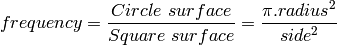
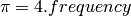

Python, π and functional programming¶
This article compares the procedural and functional styles of computer programming, through the example an algorithm approximating π. The math on which the approximation relies is interesting because it only requires random numbers and simple knowledge about circles and squares.
The first part presents the math of the problem, then the second part compares the differences between the functional and procedural styles. In the third part, a complexity wall requires us to introduce the generator, which is a powerful Python object.
The math of the problem¶
Take a square and the circle which fits into the square. A random point of the square can be either in the circle or outside of the circle. Now, the frequency for a random point to be part of the circle can be calculated as the ratio between the number of points of the circle and the total number of points. In math, this is summarised as:
The number of points in a shape is another name for the surface of the shape, that is:

To make things simple, take a circle with a radius of 1, and its containing square with a side length of 2, the frequency is simply:
This means that if you can build an experiment which gives you an approximation of the frequency then an approximation of π is four times the frequency for a random point of the square to be in the circle:

To build such an experiment, let’s picture the square, the circle, and two random points. The square and circle are centered on zero, the radius for the circle is 1 and it fits into the square with a side of 2. A random point is made of two coordinates, one for the horizontal position and one for the vertical position.

This figure makes it clear is that the point is in the circle if,
and only if, the distance between the point and the center is
smaller than the radius, which means here: smaller than one. The
method to compute the distance to the center has not changed for
thousands years, it is still:  ,
where x represents the horizontal position and y represents the
vertical position.
,
where x represents the horizontal position and y represents the
vertical position.
To sum up the recipe for π: take a million random points in the square, count the points in the circle, divide by a million and multiply by four. Serve with a slice of lemon and a small quantity of salt.
A procedural and a functional algorithm¶
That was for the theory, let’s implement the recipe which means let’s make a working example. Actually, we will make two working examples in the Python programming language and compare the styles.
In either styles, we will use the functions math.sqrt() and random.uniform(): the former returns the square root of the argument given as input, the latter returns a random decimal number uniformly distributed between the values of the first and the second arguments. Also, both scripts will take the number of points (the sample size) as the first argument, so we will need sys.argv: it holds the command line parameters of the script
#!/usr/bin/env python
from random import uniform
from math import sqrt
import sys
nb_points = int(sys.argv[1])
The procedural algorithm consists of: as many times as there are points in the sample, take a random point in the square, then test whether the point is within the circle or not and when it is inside: increment a counter by one. When the loop is finished, print the counter divided by the sample size and multiplied by 4. Here it is, written in Python:
nb_points_in_circle = 0
for i in xrange(nb_points):
if sqrt(uniform(-1,1)**2 + uniform(-1,1)**2) < 1:
nb_points_in_circle+=1
frequency = nb_points_in_circle / float(nb_points)
print("an approximation of Pi is : %s " % (frequency * 4.0))
The equivalent functional algorithm is: make a function which returns a list of random points as big a the requested sample size. Then make another function which tests if the input point is in the circle. Finally, print the length of the list of points filtered by the test function, and, as before, divide by the sample size and multiply by four:
points = lambda n: [(u(-1,1), u(-1,1)) for i in range(nb_points)]
in_circle = lambda point: sqrt( point[0]**2 + point[1]**2 ) < 1
nb_points_in_circle = len(filter(in_circle, points(nb_points)))
print("another approximation of Pi is: %s " %
(nb_points_in_circle * 4.0 / nb_points))
Now if we test it in a command line, it does approximate π, it gets more precise with more points but it is rather slow:
~$ ./procedural.py 1000
Pi ~ 3.112
~$ ./procedural.py 500000
Pi ~ 3.14192
~$ ./functional.py 500000
Pi ~ 3.140128
In your opinion, which style fits the job best? I would say the procedural style is a sequence of small operations, without much structure. The functional style better splits the problem into simpler bits whose integration solve the problem .
Better performance through lazyness¶
When comparing the performance of the two solutions, we hit a problem which is an opportunity to present the Python magic called generator. Let’s execute the script with 200 000, one million and five million points in the sample:
~$ alias time='/usr/bin/time --format " duration: %e seconds"'
~$ test_it () { for i in 200000 1000000 5000000; \
do echo -en "For $i points, \t" ;time $1 $i ; done ; }
~$ test_it ./procedural.py
For 200000 points, an approximation of Pi is : 3.13734
duration: 0.47 seconds
For 1000000 points, an approximation of Pi is : 3.14116
duration: 2.25 seconds
For 5000000 points, an approximation of Pi is : 3.1410384
duration: 11.57 seconds
~$ test_it ./functional.py
For 200000 points, another approximation of Pi is: 3.14172
duration: 0.60 seconds
For 1000000 points, another approximation of Pi is: 3.141108
duration: 3.61 seconds
For 5000000 points, another approximation of Pi is: 3.1415296
duration: 36.09 seconds
~$ # Do not hesitate to send the stop signal if it takes too long
~$ # on your computer: Ctrl-C or Ctrl-Z
Mmh, the functional version takes longer and it does not scale. The problem stems from the fact that points() and filter() make up lists of several million elements, all stored in the laptop memory where the script was tested, which is too small to handle them all efficiently. It is no use to store them all, in this problem, we only need one at a time, as the procedural algorithm does.
A solution to avoid the waste of memory is to use is a generator , it is a kind of Python magic which behaves like a list, but which generates the element of the list on the fly when they are requested by the function which manipulates the generator. They are not stored, it is on demand. This technique is also called lazy evaluation because, like a lazy person would do, the work is done at the very last moment. This is the goal of the the yield() Python statement, if there is a need to create its own custom generator.
The points() function is slightly modified: this expression, which returns a list
[(uniform(-1,1), uniform(-1,1)) for i in xrange(size)]
is substituted by this expression, which returns a generator:
((uniform(-1,1), uniform(-1,1)) for i in xrange(size))
Yes, only the brackets are transformed into parenthesis. Then, the filter() function is substituted by its generator-returning counterpart ifilter() in the itertools module. One last change: a generator has no length, as elements are generated on demand and can be infinite, so len() is substituted by a trick: sum a list of ones for each point which are in the circle:
nb_points = int( sys.argv[1] )
points = lambda n: ((u(-1,1), u(-1,1)) for i in xrange(n))
in_circle = lambda point: sqrt(point[0]**2 + point[1]**2) < 1
nb_points_in_circle = sum(1 for _ in ifilter(in_circle, points(nb_points)))
print("A slightly faster implementation: %s " %
(nb_points_in_circle * 4.0 / nb_points))
The test_it() function shows that lazy functional implementation operates with a performance boost of 14%, 25% and 55% over the previous functional implementation:
~$ test_it ./harder_better_stronger_faster.py
For 200000 points, A slightly faster implementation: 3.14206
duration: 0.58 seconds
For 1000000 points, A slightly faster implementation: 3.143328
duration: 2.77 seconds
For 5000000 points, A slightly faster implementation: 3.1425456
duration: 13.56 seconds
At this point, the two styles are technically roughly equivalent, the functional style is 10% slower than the procedural counterpart. Maybe, those 10% are the small efficiencies that Knuth was telling us about: “we should forget about small inefficiencies, say about 97% of the time: premature optimization is the root of all evil”.
The second part of this article shows multiple ways to accelerate this Python code: using the C language, making use of multiple cores or processors. But if you really need an approximation of π, you’ll see that it really is the algorithm that needs to be changed.